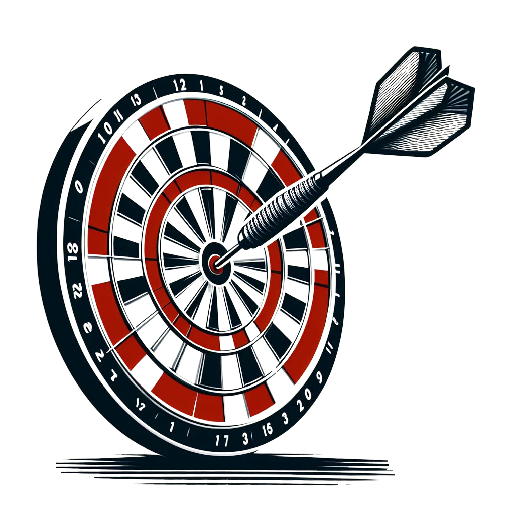

Тест: Яка IT-кар’єра мені підходить?
Готові перезапустити свою кар'єру в ІТ, але незнаєте,з чого почати? Незнаєте,яка професіявідповідаєвашимнавичкам та інтересам?Хочетевикористатисвоїприродні таланти та попереднійдосвід для досягнення успіху в ІТ-індустрії?
Візьмітьучастьу цьому30-хвилинномукар'єрномутесті,щоб визначити свої сильні сторони таздібностіірозкритисвійпотенціал. Можливість: зрозуміти, які сфериІТнайкращевідповідають вашим інтересам та навичкам.
